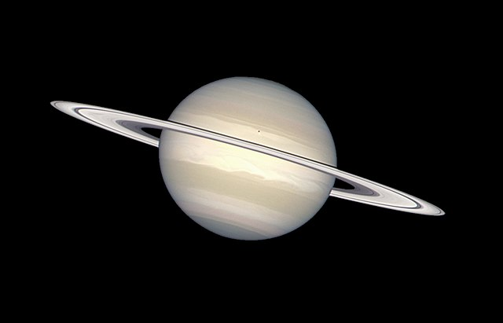

Hi, my name is
SPACE DISTANCE
Це сайт, який дає вам змогу дізнатись більше про планети Сонячної системи, та прорахувати за який час можна дістатись до будь - якої планети певним способом.

Це сайт, який дає вам змогу дізнатись більше про планети Сонячної системи, та прорахувати за який час можна дістатись до будь - якої планети певним способом.
.png)
Мета: розробити сайт для дослідження часу, за який можливо дістатись до будь - якої планети Сонячної системи.
Актуальність: дослідження відстані до інших планет має величезне значення для розвитку нашого розуміння Всесвіту та розширення можливостей людства в космічних дослідженнях.
Сонячна система - це величезна космічна родина, яка об'єднує в собі сонце та його планети. У цій гравітаційній обіймі обертаються вісім неймовірних світил. Починаючи від найближчого до сонця і рухаючись до самого далекого, давайте розглянемо кожну планету окремо.
Меркурій - перша планета, найближча до сонця. Це гаряча та суха планета, що має найкоротший обертовий період.

Венера - друга планета, яку іноді називають "вечірньою зіркою" чи "ранковою зіркою". Венера має густий атмосферний шар, що утримує тепло.

Земля - наша рідна планета, єдина відома планета, де існує життя. Земля має різноманітні екосистеми та умови для розвитку різних форм життя.
.jpg)
Марс - червона планета, відома своєю пустельною ландшафтною поверхнею. Марс має атмосферу, але вона значно тонша, ніж земна.

Юпітер - найбільша планета у Сонячній системі. Це газовий гігант з масою, що значно перевищує масу всіх інших планет разом узяті.

Сатурн - відомий своїми вражаючими обручами, які складаються з льодових частинок та каміння.
Уран - планета, яка лежить на боку, відома своєю холодною атмосферою та характерним наклоном.
_-_JPEG_converted.jpg)
Нептун - остання планета від сонця, газовий гігант, що має схожі характеристики з Ураном.
_flatten_crop.jpg)